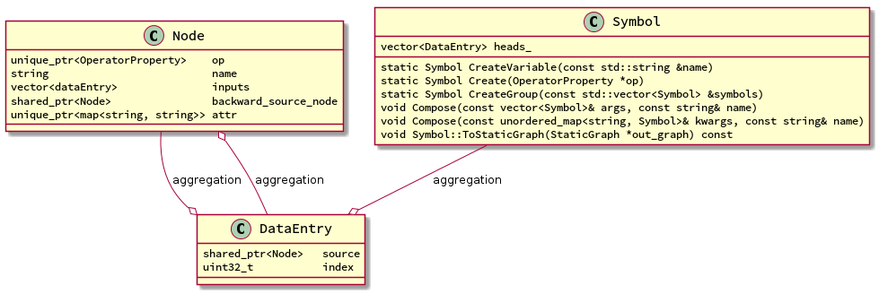
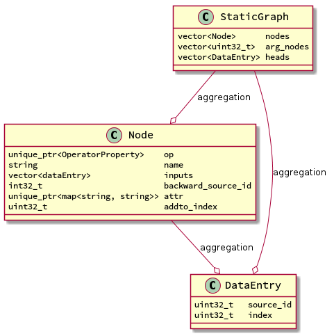

MXNET Symbol系统
背景知识
Mxnet是需要手工构建计算图的。mxnet的基本运行流程是这样的:
- 通过Symbol的API来构建一个Compute Graph
- 通过调用
GraphExecutor::Bind静态函数来获得一个executor对象。 - 通过调用executor对象的
forward和backward来进行迭代
Symbol
Symbol就是用来构造计算图的。它主要是提供面向用户的接口, 通过Symbol使用者可以构建 一个计算图，当真正要计算的时候，会转换成StaticGraph。
类图

Symbol
heads_: 实际代表的是Node的op的输出，有几个输出就有几个元素，这些DataEntry对 象的source指向同一个Noe实例，index会递增。有一个例外就是通过Group得到symbol， 该symbol实际上是将各被group的symbol的heads_直接合并得到的。- 三个静态方法都是用来创建Symbol的，分别是创建变量，从op中创建symbol以及将多个 symbol group成一个。
- Compose是将输入的symbol作为inputs组合进当前的symbol。
Node
这个是最核心的对象，最重要的属性是inputs，通过inputs就将不同的symbol串起来了。其 它的属性都是很直观的。
DataEntry
这个对象主要是用来代表输出，source代表是哪个Node的op的输出，index代表是第几个输 出。
StaticGraph
这实际上也是计算图，它是被mxnet内部使用的，它可以和Symbol进行相互转换，Symbol是 面向用户的接口，所以更灵活，StaticGraph是内部使用，所以更好优化。
类图
